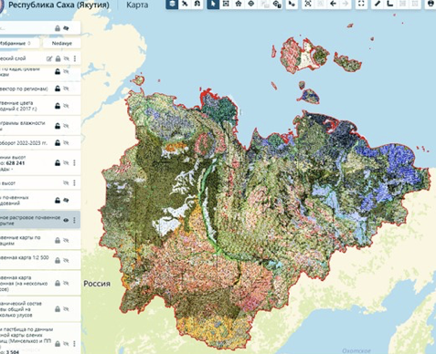
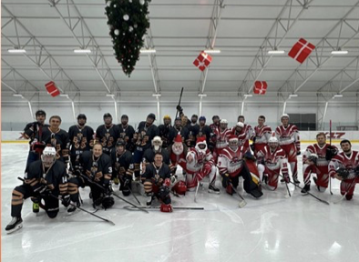

Разрабатываем проекты-победители премии Золотой Осени, направленные на возвращение в оборот миллионов гектар неиспользуемых земель; развиваем Геопортал Министерства здравоохранения Российской Федерации; оказываем всестороннюю поддержку Всероссийского детского конкурса «АгроНТРИ», постоянно улучшаем Цифровые Карты городов-курортов черноморского побережья России; в свободное время спонсируем хоккейную команду «Б5» и сами играем в хоккей, завоевываем Ледовые кубки; организуем закрытый клуб Б5 для предпринимателей-гедонистов; а в рабочее время продолжаем расширять функциональность «Б5ГИС» и другие продукты компании, работать над их производительностью.
Не остается в стороне и наша поддержка Вооруженным силам РФ, волонтерам и всем участникам СВО. Благодарим Вас за этот подвиг, мир будет только благодаря Вам, на нашу поддержку вы всегда можете рассчитывать.
Говорим спасибо нашим коллегам, кто присоединился к команде в 2024 году и приглашаем IT- героев в Новый 2025 год
Б5Групп стремительно развивается. Для реализации масштабных проектов нужны талантливые, целеустремленные люди и пытливые умы. В уходящем году к компании присоединились 24 единомышленника (нет это не совпадение, в 25 году планируем удвоить эту цифру), Наша команда растёт, а с ней растут и наши амбиции, возможности и конечно же обязательства перед обществом.
С благодарностью и продуктивными намерениями рассказываем о новых партнерствах и сотрудничествах
в этом году мы успешно прошли аккредитацию как поставщика компании «Ростех»; подписали соглашение о стратегическом партнерстве с «VK Tech»; стали технологическим партнером ведущей российской компании в области автоматизации «Комита ЦТ»; появились на цифровых полках Университетов.
Передали в пользование ПО «Б5ГИС» межкафедральной научно-исследовательской и производственной Проблемной лаборатории Государственного университета по землеустройству; поддерживаем детский Всероссийский конкурс АгроНТРИ. Помогли не только с организацией конкурса, но и предоставили школьникам из сельских школ ресурсы для работы над агро проектами.

Вовлечение в оборот неиспользуемых сельхозземель Якутии
Наш отечественный продукт «Б5ГИС» автоматизирует обработку и представление пространственных данных с высокой точностью и скоростью.
Рассказываем о проектах, которыми гордимся и над которыми работали сотни тысяч часов. Современные границы земель сельскохозяйственного назначения Якутии и субъектов Северо-Кавказского федерального округа находятся под чутким контролем «Б5ГИС».
В Республике Саха (Якутия) мы подготовили карту-схему земель сельскохозяйственного назначения, включая угодья, для установления их границ.
На XXVI агропромышленной выставке «Золотая Осень 2024» компания Б5Групп и Государственный университет землеустройства (ГУЗ) выиграли золотую медаль за совместный проект, направленный на зонирование и вовлечение в сельскохозяйственный оборот неиспользуемых земель.
Мы превратили многочисленные архивные данные, включая землеустроительную документацию и гидрографические материалы, а также спутниковые данные ДЗЗ и данные ЕГРН в единую цифровую карту-схему. Собрали и проанализировали более 5000 карт разных масштабов и качества.

Развитие платформы «Б5ГИС»
Продолжаем улучшать функциональность и производительность платформы. Среди направлений работы — система генерации веб-страниц по текстовому описанию.
Планы на 2025 год: внедрение ИИ
Генерация страниц по текстовому описанию поможет снизить нагрузку на разработчиков, ускорить веб-разработку и уменьшить количество ошибок. Для пользователей планируем внедрить умных помощников.
Давайте расскажем о планах на 2025 год, они грандиозные: внедрение ИИ для конструирования страниц; глобальная переработка подсистемы бизнес-процессов (БП), а именно миграция ядра БП из БД в Python-сервис, оптимизация производительности и масштабируемости, разработка системы авто восстановления после сбоев; расширение функционала ГИС-систем.
ИИ-агенты смогут облегчить взаимодействие с системой и автономно выполнять задачи пользователей. Автоматизация повторяющихся процессов позволит сотрудникам сосредоточиться на стратегически важных задачах.
Планируем применять ИИ для анализа поведения пользователей и адаптации интерфейсов, чтобы сделать работу с системой более интуитивной.
Вернемся в 2024 и ответим на вопрос, которым мы задались в начале года: «Как выделить лес для обучения нейросети, если он меняется каждый сезон?»
Спутниковые снимки – это не ровные и чёткие изображения, а мозаика из данных, сделанных в разное время года, при разной погоде и освещении. Летом лес выглядит зелёным, зимой – серым и размытым, осенью – тёмным и «потерянным» в общей картине. Для алгоритма это не просто сложность, а настоящий вызов.
Решение
Команда Б5Групп разработала подход, который объединяет снимки из разных сезонов в единый датасет, а также корректирует яркость сложных участков. Это позволило нейросетям лучше понимать, что они анализируют, и снижать количество ошибок на границах между лесными массивами. Для решения задачи используется архитектура FPN с энкодером EfficientNet – проверенное решение, которое хорошо справляется как с небольшими, так и с масштабными данными.
Точность модели, измеряемая метрикой IoU, выросла с 0,93 до 0,95. Для тех, кто не знаком с этой метрикой: прирост в 0,02 – это огромный шаг вперёд, особенно на сложных участках, где раньше алгоритмы ошибались.
Б5 на льду и за его пределами
Компания Б5Групп является спонсором хоккейной команды «Б5». Наши сотрудники участвуют в спортивных турнирах Любительской Хоккейной Лиги. В этом году одержали победу на Кубке Ледового дворца «Сокольники». Спорт — важная часть нашей корпоративной культуры, мы будем и дальше поддерживать развитие хоккея в России. Не спортом едины. Здесь нет строгих правил, здесь делают так, чтобы бизнес стал удовольствием. В 2024 году один из учредителей ГК Б5, Кирилл Пирогов открыл Закрытый клуб для предпринимателей-гедонистов.

С Новым 2025 годом, дорогие друзья, коллеги, партнеры и цифровые лидеры!
2024 год для Б5Групп стал не просто годом работы, а настоящим марафоном инноваций, достижений и новых открытий. Мы смогли сделать больше, чем планировали, это результат слаженной работы команды, партнёров и даже искусственного интеллекта. Мы переопережаем бумажные сроки проектов, чтобы быть быстрее, выше и алгоритмичнее. Ну а Новый 2025 год наступит по расписанию.
Пусть 2025 год пройдёт без падений серверов, с укрощёнными дедлайнами и проектами, которые становятся легендами. Желаем вам креативных идей, продуктивных овертаймов (если уж совсем без них нельзя) и продуктов, о которых пользователи скажут: «Это гениально!»
С уважением, Б5Групп.
Заместитель генерального директора Вячеслав Бутин.